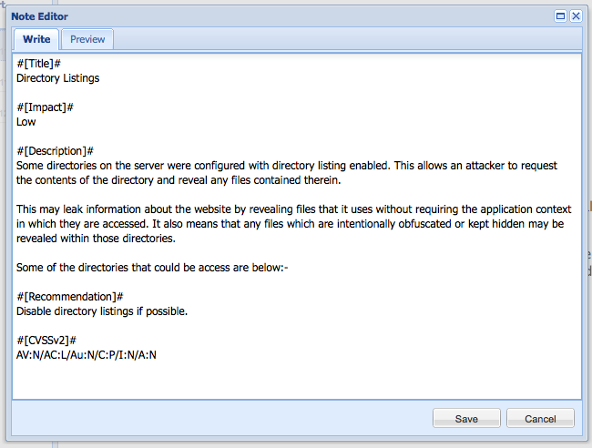
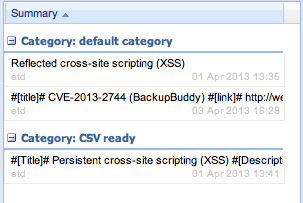
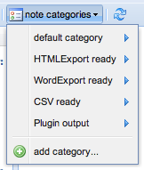
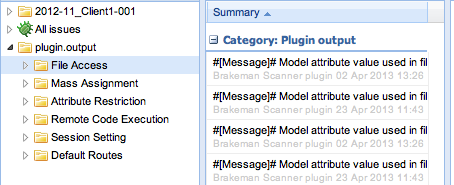
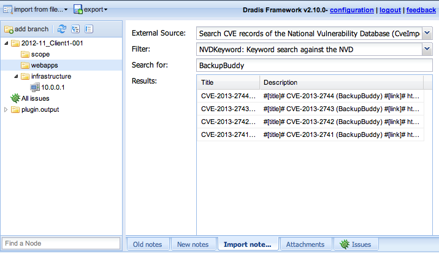

Dradis
Framework
Creating custom plugins
By Daniel Martin / @etdsoft
Agenda
- It's just a Rails app
- Basics: notes, nodes and categories
- Debugging: logs,
rails console&Thor - Plugin types
A simple rails app
app/
attachments/
config/
config.ru
db/
doc/
lib/
log/
public/
script/
spec/
test/
tmp/
vendor/A simple rails app
app/ # models, views & controllersattachments/ # uploaded filesconfig/ # app config (e.g. db connection)config.ru # boring...
db/
doc/
lib/log/ # app logs (more later)public/ # boring...
script/
spec/
test/
tmp/vendor/ # plugins!/vendor/plugins
The ugly truth about plugins
Plugins boil down to a single method:
Export plugin
module CsvExport
module Actions
# This method is invoked by the framework
def to_csv(params={})
# [...]
# Create the CSV data
csv_string = ::CSV.generate do |csv|
# [...]
end
# Use Rails functions to send the generated data
send_data csv_string, :filename => 'dradis-results.csv'
end
end
end
Upload plugin
module BrakemanUpload
# This method will be called by the framework when the user selects
# your plugin from the drop down list of the 'Import from file'
# dialog
def self.import(params={})
file_content = File.read( params[:file] )
# [...]
# Parse the uploaded file into a Ruby Hash
data = MultiJson.decode(file_content)
# [...]
data['warnings'].each do |warning|
# [...]
node_for_type.notes.create(
:author => @author,
:category => @category,
:text => warning_info
)
# [...]
end
end
Import plugin
# Search NIST NVD for issues
module NVDKeyword
NAME = "Keyword search against the NVD"
CONF = { :url => "http://web.nvd.nist.gov/view/vuln/[...]" }
def self.run(params={})
records = []
# [...] fetch elements from remote source
while(elements.any?)
# [...] convert elements into "records"
records << {
:title => record[:title],
:description => record.map do |key,value|
"#[#{key}]#\n#{value}" }.join("\n\n")
end
end
# [...]
return records
end
end
... and the code structure is generated for you
More on Rails for hackers
- Rails Basics series by @cktricky
- Railscasts learn by watching
- RailsForZombies.org step-by-step videos
- Getting Started with Rails guide
- Try ruby learn by doing (non-Rails)
Notes, nodes and categories

Note format
Note fields
{
'Title' => 'Directory Listings',
'Impact' => 'Low',
'Description' => 'Some directories...',
'Recommendation' => 'Disable directory listings.',
'CVSSv2' => 'AV:N/AC:L/Au:N/C:P/I:N/A:N'
}
Categories
 In the DB
Node --< Notes --- CategoryDebugging
- Log files
- Rails console
- Thor
Debugging: log files
app/
attachments/
config/
config.ru
db/
doc/
lib/log/public/
script/
spec/
test/
tmp/
vendor/
Log files
log/ development.log production.log
test.log bj.etds-MacBook-Air.local.development.log # background jobsLog files
Started GET "/upload/status?item_id=5&after=229" for 127.0.0.1
at 2013-04-23 11:45:53 +0200
Processing by UploadController#status as JS
Parameters: {"item_id"=>"5", "after"=>"229", "_"=>"1366710352985"}
Log Load (0.2ms) SELECT "logs".* FROM "logs" WHERE
(uid = '5' and id > 229)
Rendered upload/status.js.erb (0.0ms)
Completed 200 OK in 6ms (Views: 4.7ms | ActiveRecord: 0.2ms)
Completed 500 Internal Server Error
Started POST "/upload/create" for 127.0.0.1 at...
Processing by UploadController#create as JS
Parameters: {"utf8"=>"✓", "authenticity_token"=>"YhZSz[...]",
"uploader"=>"NessusUpload", "file"=>"", "item_id"=>"4"}
Configuration Load (0.2ms) SELECT "configurations".*
FROM "configurations"
WHERE "configurations"."name" = 'uploads_node' LIMIT 1
Node Load (0.1ms) SELECT "nodes".* FROM "nodes"
WHERE "nodes"."label" = 'Uploaded files' LIMIT 1Completed 500 Internal Server Error in 2ms
NoMethodError (undefined method `original_filename' for "":String):
app/controllers/upload_controller.rb:99:in `create'
Rendered ../actionpack-.../.../rescues/_trace.erb (1.6ms)
Rendered ../actionpack-.../.../rescues/_request_and_response.erb (1.4ms)
Rendered ../actionpack-.../.../rescues/diagnostics.erb within rescues/layout (14.7ms)
Debugging: Rails console
(Runs in Development mode by default)
Querying the DB
Object finders
$ bundle exec rails console
Loading development environment (Rails 3.2.13)
1.9.3p327 :001 > Node.count
(0.2ms) SELECT COUNT(*) FROM "nodes"
=> 36
1.9.3p327 :002 > Node.first
Node Load (0.3ms) SELECT "nodes".* FROM "nodes" LIMIT 1
=> #<Node id: 2, type_id: 0, label: "2012-11_Client1-001",
parent_id: nil, created_at: "2012-11-...",
updated_at: "2012-11-...", position: 1>
1.9.3p327 :003 > Node.where(:parent_id => nil)
Node Load (0.3ms) SELECT "nodes".* FROM "nodes"
WHERE "nodes"."parent_id" IS NULL
=> [#<Node id: 2, type_id: 0, label: "2012-11_Client1-001" [...]>,
#<Node id: 6, type_id: 3, label: "All issues" [...]>,
#<Node id: 10, type_id: nil, label: "Uploaded files" [...]>,
#... ]
Associations
1.9.3p327 :005 > Node.find_by_label('webapps')
Node Load (0.3ms) SELECT "nodes".* FROM "nodes"
WHERE "nodes"."label" = 'webapps'
=> #<Node id: 4, type_id: 0, label: "webapps", parent_id: 2 [...]>
1.9.3p327 :006 > Node.find(4).notes
Node Load (0.4ms) SELECT "nodes".* FROM "nodes"
WHERE "nodes"."id" = ? [["id", 4]]
Note Load (0.4ms) SELECT "notes".* FROM "notes"
WHERE "notes"."node_id" = 4
=> [
#<Note id: 2, author: "etd", text: "#[Title]#\nRefl..." [...]>,
#<Note id: 3, author: "etd", text: "#[Title]#\nPers..." [...]>,
#<Note id: 25, author: "etd", text: "#[Title]#\nBusy..." [...]>
]
1.9.3p327 :007 > Node.find(4).notes.last.category
Node Load (0.2ms) SELECT "nodes".* FROM "nodes"
WHERE "nodes"."id" = ? [["id", 4]]
Note Load (0.3ms) SELECT "notes".* FROM "notes"
WHERE "notes"."node_id" = 4
Category Load (0.1ms) SELECT "categories".*
FROM "categories" WHERE "categories"."id" = 1 LIMIT 1
=> #<Category id: 1, name: "default category" [...]>
Create, destroy, update
1.9.3p327 :009 > node = Node.create :label => 'BSides London 2013'
=> #<Node id: 40, label: "BSides London 2013" [...]>
1.9.3p327 :011 > node.notes.create(:author => 'rails console',
:text => 'hello,world', :category => Category.last)
=> #<Note id: 101, author: "rails console", text: "hello,world",
node_id: 40, category_id: 8, [...]>
1.9.3p327 :012 > node.destroy
=> #<Node id: 40, type_id: nil, label: "BSides London 2013" [...]>
1.9.3p327 :014 > Note.find(101)
Note Load SELECT "notes".* FROM "notes"
WHERE "notes"."id" = ? [["id", 101]]
ActiveRecord::RecordNotFound: Couldn't find Note with id=101
from ../active_record/relation/finder_methods.rb:343:in `find_one'
from ../active_record/relation/finder_methods.rb:314:in `find_with_ids'
from ../active_record/relation/finder_methods.rb:107:in `find'
from ../active_record/querying.rb:5:in `find'
from (irb):14
1.9.3p327 :015 >
More on the Rails console
- Console tricks Railscast
- Advanced Queries in Rails 3 Railscast
Debugging: Thor
Use your plugins from the command line.
Available tasks
$ bundle exec thor -T
dradis
------
thor dradis:backup # creates a backup of your current ...
thor dradis:export:html # export the current repository str...
thor dradis:export:project:package # creates a copy of your current re...
thor dradis:export:project:template # export the current repository str...
thor dradis:export:word # export the current repository str...
thor dradis:import:cve:keyword QUERY # import CVE records from the NVD
thor dradis:import:msf:all # Import the hosts, sevices, notes,...
thor dradis:import:osvdb:lookup ID # search the OSVDB for a specific ID
thor dradis:import:osvdb:search QUERY # search the OSVDB with a general q...
thor dradis:import:vulndb:hq QUERY # search your VulnDB HQ (http://vul...
thor dradis:import:vulndb:private QUERY # search a remote VulnDB instance w...
thor dradis:import:wiki:search14 QUERY # perform a general search against ...
thor dradis:import:wiki:search15 QUERY # perform a general search against ...
thor dradis:reset # resets your local dradis repository
thor dradis:reset:attachments # removes all attachments
thor dradis:reset:database # removes all data from a dradis re...
thor dradis:reset:logs # removes all log files
thor dradis:reset:password # Set a new shared password to acce...
thor dradis:server # start dradis server
thor dradis:settings [NAMESPACE] # list dradis settings, with an opt...
thor dradis:settings:get SETTING # get the value of a dradis setting
thor dradis:settings:set SETTING VALUE # change the value of a dradis setting
thor dradis:setup:configure # Creates the Dradis configuration ...
thor dradis:setup:migrate # ensures the database schema is up...
thor dradis:setup:seed # adds initial values to the databa...
thor dradis:upload:brakeman FILE # upload Brakeman results in JSON f...
thor dradis:upload:burp FILE # upload Burp scanner XML output
thor dradis:upload:nessus FILE # upload nessus results
thor dradis:upload:nexpose FILE # upload NeXpose results
thor dradis:upload:nikto FILE # upload nikto results
thor dradis:upload:nmap FILE # upload the results of an Nmap scan
thor dradis:upload:openvas FILE # upload OpenVAS results
thor dradis:upload:project:package FILE # import an entire repository package
thor dradis:upload:project:template FILE # create a new repository structure...
thor dradis:upload:retina FILE # upload Retina results
thor dradis:upload:surecheck FILE # Upload a SureCheck .sc file
thor dradis:upload:typhon FILE # upload typhon results
thor dradis:upload:w3af FILE # upload w3af results
thor dradis:upload:wxf FILE # upload wXf results
thor dradis:upload:zap FILE # upload ZAP results
thor dradis:version # displays the version of the dradi...
Task description
$ bundle exec thor help dradis:import:cve:keyword
Usage:
thor dradis:import:cve:keyword QUERY
Description:
This command searches CVE records from the National Vulnerability
Database (http://web.nvd.nist.gov/)Running a task:
$ bundle exec thor dradis:import:cve:keyword BackupBuddy
CVE Search
===========
4 results
CVE-2013-2744 (BackupBuddy)
CVE-2013-2743 (BackupBuddy)
CVE-2013-2742 (BackupBuddy)
CVE-2013-2741 (BackupBuddy)Defining tasks
<plugin>/lib/tasks/thorfile.rb
class Import < Thor
namespace "dradis:import:cve"
desc "keyword QUERY", "import CVE records from the NVD"
long_desc "This command searches CVE records from the National..."
def keyword(query)
require 'config/environment'
# Invoke the plugin
results = CveImport::Filters::NVDKeyword.run(:query => query)
puts "CVE Search\n==========="
puts "#{results.size} results"
results.each do |record|
puts record[:title]
end
end
end(also generated for you)
Plugin types
- Export: HTML & Word
- Import: MediaWiki, VulnDB & OSVDB
- Upload: Burp, Nessus, Nexpose, Nikto, Nmap, OpenVAS, Qualys, Retina, SureCheck, Typhon, w3af, wXf, ZAP
Plugin generator
$ bundle exec rails generate
Usage: rails generate GENERATOR [args] [options]
# ....
ExportPlugin:
export_plugin
ImportPlugin:
import_plugin
# ....
UploadPlugin:
upload_pluginUpload plugin:
$ bundle exec rails g upload_plugin BrakemanUpload
create brakeman_upload/README
create brakeman_upload/MIT-LICENSE
create brakeman_upload/Rakefile
create brakeman_upload/init.rb
create brakeman_upload/install.rb
create brakeman_upload/uninstall.rbcreate brakeman_upload/lib/brakeman_upload.rbcreate brakeman_upload/lib/tasks/thorfile.rb
create brakeman_upload/lib/tasks/brakeman_upload_tasks.rake
create brakeman_upload/spec/spec_helper.rb
create brakeman_upload/spec/brakeman_upload_spec.rb
create brakeman_upload/lib/brakeman_upload/meta.rb
create brakeman_upload/lib/brakeman_upload/filters.rb
Import plugin:
$ bundle exec rails g import_plugin CveImportExport plugin:
$ bundle exec rails g export_plugin CsvUploadPlugin configuration
module BrakemanUpload
class Configuration < Core::Configurator
configure :namespace => 'brakeman_upload'
setting :category, :default => 'Plugin output'
setting :author, :default => 'Brakeman Scanner plugin'
setting :parent_node, :default => 'plugin.output'
end
end
Lots of examples
Upload plugin: Brakeman
Brakeman - Rails Security Scanner
Brakeman output
To specify an output file for the results:
brakeman -o output_fileThe output format is determined by the file extension or by using the -f option.
texthtmltabsjsoncsv
Multiple output files can be specified:
brakeman -o output.html -o output.jsonBack to our
generated code
<plugin>/brakeman_upload/lib/brakeman_upload/filters.rb
module BrakemanUpload
private
@@logger=nil
public
# This method will be called by the framework when the user selects
# your plugin from the drop down list of the 'Import from file'
# dialog
def self.import(params={})
file_content = File.read( params[:file] )
@@logger = params.fetch(:logger, Rails.logger)
# TODO: do something with the contents of the file!
# if you want to print out something to the screen or to the
# uploader interface use @@logger.info("Your message")
end
end
<plugin>/brakeman_upload/lib/brakeman_upload/filters.rb
module BrakemanUpload
# [...]
# This method will be called by the framework when the user selects
# your plugin from the drop down list of the 'Import from file'
# dialog
def self.import(params={})
# [...]
# 0. Load plugin config
# 1. Parse the uploaded file into a Ruby object (e.g. Hash)
# 2. For each Brakeman issue...
# 2.1. Extract interesting information
# 2.2. Create a note with it
end
end
Remember the plugin configuration?
module BrakemanUpload
class Configuration < Core::Configurator
configure :namespace => 'brakeman_upload'
setting :category, :default => 'Plugin output'
setting :author, :default => 'Brakeman Scanner plugin'
setting :parent_node, :default => 'plugin.output'
end
end
<plugin>/brakeman_upload/lib/brakeman_upload/filters.rb
def self.import(params={})
# 0. Load plugin config
# We'll create a bunch of Nodes/Notes, we need to initialize some
# details:
#
# get the "Plugin output" category instance or create it if it does
# not exist
@category = Category.find_or_create_by_name(Configuration.category)
# every note we create will be assigned to this author
@author = Configuration.author
# create the parent early so we can use it to provide feedback and
# errors
@parent = Node.find_or_create_by_label(Configuration.parent_node)
# [...]
end<plugin>/brakeman_upload/lib/brakeman_upload/filters.rb
def self.import(params={})
# 1. Parse the uploaded file into a Ruby object (e.g. Hash)
# Parse the uploaded file into a Ruby Hash
data = MultiJson.decode(file_content)
# [...]
end
Other formats:
XML- Burp, Nessus...SQLite3- SureCheckZIP- ProjectManagement
<plugin>/brakeman_upload/lib/brakeman_upload/filters.rb
def self.import(params={})
# 2. For each Brakeman issue...
# 2.1. Extract interesting information
# 2.2. Create a note with it
# [...]
end
Brakeman file format
{
"warnings": [
{
"warning_type": "File Access",
"warning_code": 16,
"message": "Model attribute value used in file name",
"file": "./app/controllers/attachments_controller.rb",
"line": 60,
"code": "File.rename(Attachment.find(params[:id], [...]).to_s)",
"location": {
"type": "method",
"class": "AttachmentsController",
"method": "update"
},
"user_input": "Attachment.find([...])",
"confidence": "Medium"
// ...
},
// ...
]
}<plugin>/brakeman_upload/lib/brakeman_upload/filters.rb
def self.import(params={})
# 2. For each Brakeman issue...
# Keep a reference to the node holding each warning type
sorted_warnings = {}
data['warnings'].each do |warning|
type = warning['warning_type']
# Check if this is the first time we've found this warning type
if !sorted_warnings.key?(type)
# and create a child node to hold any warnings
sorted_warnings[type] = @parent.children.find_or_create_by_label(type)
end
node_for_type = sorted_warnings[type]
warning_info =< @author,
:category => @category,
:text => warning_info
)
end
end
Plugin results
Import plugin: CVE
Searching the database
http://web.nvd.nist.gov/view/vuln/search-results?search_type=all&cves=on&query=<QUERY>
For example:
http://web.nvd.nist.gov/view/vuln/search-results?search_type=all&cves=on&query=BackupBuddy
Cleaning up the HTML
<dl>
<span>
<dt><a href="http:...">CVE-2013-2744</a></dt>
<dd>
<p class="row"><span class="label">Summary:</span> ...</p>
<div class="row"><span class="label">Published:</span> 04/02/2013</div>
<div class="row"><span class="label">CVSS Severity:</span> 5.0 (MEDIUM)</div>
</dd>
<dt><a href="http:...">CVE-2013-2743</a></dt>
<dd>
<p class="row"><span class="label">Summary:</span> ...</p>
<div class="row"><span class="label">Published:</span> 04/02/2013</div>
<div class="row"><span class="label">CVSS Severity:</span> 7.5 (HIGH)</div>
</dd>
...
</span>
</dl>
And this is what we need
Each entry is a Ruby hash:
{ :title => '...', :description => '...'}From:
<dl>
<span>
<dt><a href="http:...">CVE-2013-2744</a></dt>
<dd>
<p class="row"><span class="label">Summary:</span> ...</p>
<div class="row"><span class="label">Published:</span> 04/02/2013</div>
<div class="row"><span class="label">CVSS Severity:</span> 5.0 (MEDIUM)</div>
</dd>
...
</span>
</dl>
To:
[
{ :title => 'CVE-2013-2744', :description => '#[Title]#\nCVE-2013-2744 (BackupBu...'}
// ...
]
<plugin>/cve_import/lib/cve_import/filters.rb
module CveImport::Filters
module NVDKeyword
# Plugin config
NAME = "Keyword search against the NVD"
CONF = {
:url => "http://web.nvd.nist.gov/view/vuln/search-results?search_type=all&cves=on&query="
}
def self.run(params={})
# [...]
# 1. Make the request
# 2. Scrape the page. For each issue create a hash with :title
# and :description
end
end
end
<plugin>/cve_import/lib/cve_import/filters.rb
require 'open-uri'
module CveImport::Filters
module NVDKeyword
# [...]
def self.run(params={})
records = []
# 1. Make the request
begin
keyword = CGI::escape(params[:query])
url = CONF[:url] + keyword
results = Nokogiri::HTML(open(url))
// [...]
rescue Exception => e
// [...]
end
return records
end
end
end
Nokogiri - XML/HTML parsing
From:
<dl>
<span>
<dt><a href="http:...">CVE-2013-2744</a></dt>
<dd>
<p class="row"><span class="label">Summary:</span> ...</p>
<div class="row"><span class="label">Published:</span> 04/02/2013</div>
<div class="row"><span class="label">CVSS Severity:</span> 5.0 (MEDIUM)</div>
</dd>
...
</span>
</dl>
To:
[
{ :title => 'CVE-2013-2744', :description => '#[Title]#\nCVE-2013-2744 (BackupBu...'}
// ...
]
<plugin>/cve_import/lib/cve_import/filters.rb
module CveImport::Filters
module NVDKeyword
# [...]
def self.run(params={})
# [...]
# 2. Scrape the page. For each issue create a hash with :title
# and :description
elements = results.xpath('//dl/span').first.elements
while(elements.any?)
dt = elements.shift
dd = elements.shift
record = {}
record[:title] = "#{dt.text} (#{keyword})"
record[:link] = "http://web.nvd.../detail?vulnId=" + dt.text
record[:summary] = dd.elements[0].text.split(': ')[1]
record[:published] = dd.elements[1].text.split(': ')[1]
record[:severity] = dd.elements[2].text.split(': ')[1]
record[:vector] = CGI::unescape(dd.elements[2].xpath('.//a').first['href'].split('&')[1].split('=')[1])
records << {
:title => record[:title],
:description => record.map do |key,value|
"#[#{key}]#\n#{value}"
end.join("\n\n")
}
end
# [...]
end
end
end
Thor task
class Import < Thor
namespace "dradis:import:cve"
desc "keyword QUERY", "import CVE records from the NVD"
long_desc "This command searches CVE records from the National..."
def keyword(query)
require 'config/environment'
# Invoke the plugin
results = CveImport::Filters::NVDKeyword.run(:query => query)
puts "CVE Search\n==========="
puts "#{results.size} results"
results.each do |record|
puts record[:title]
end
end
endExport plugin: CSV
Reflected XSS, "Reflected XSS occurs...", "Reliable avoidance of..."
Dangerous HTTP methods, "The HTTP PUT...", "Disable any..."
Too many secrets, "Relying on too many...", "Focus on..."Generated code
<plugin>/csv_export/lib/csv_export.rb
module CsvExport
module Actions
# first action
def to_myformat(params={})
# your action code to do the export goes here
render :type => 'text/html',
:text => '<html><body><h1>Sample Export Plugin</h1>' +
'<p>This method does not define any format.</p>' +
"<p>Find me at: <code>#{__FILE__}</code></p>"
end
# [...]
end
end<plugin>/csv_export/lib/csv_export.rb
def to_csv(params={})
# [...]
# 1. Locate the Notes to export
# 2. Cycle through the notes & create CSV data
# [...]
end<plugin>/csv_export/lib/csv_export.rb
def to_csv(params={})
# 1. Locate the Notes to export
# Locate our Category
csv_category = Category.find_by_name( Configuration.category )
# Find the notes that are assigned to our category
notes = Note.where(:category_id => csv_category)
# [...]
end<plugin>/csv_export/lib/csv_export.rb
def to_csv(params={})
# [...]
# 2. Cycle through the notes & create CSV data
# Create the CSV data
csv_string = ::CSV.generate do |csv|
# Add the header line with all the field names.
# Remember note.field returns a hash:
# {'Title' => 'Foo', 'Description' => 'Bar'...}
csv << notes.first.fields.keys
# For each of the notes, we dump the field values.
# This assumes all notes have the same fields *and*
# in the same order
notes.each do |note|
csv << note.fields.values
end
end
# While debugging, it's ok to render the results in the browser
render :type => 'text/html', :text => csv_string
# For the final plugin, send the resulting CSV data
# as a downloadable file
# send_data csv_string, :filename => 'dradis-results.csv'
endRuby stdlib's CSV
CSV result
Title, Description, Recommendation...
Reflected XSS, "Reflected XSS occurs...", "Reliable avoidance of..."
Dangerous HTTP methods, "The HTTP PUT...", "Disable any..."
Too many secrets, "Relying on too many...", "Focus on..."Thank You
Daniel Martin / @etdsoft
You will ask questions now